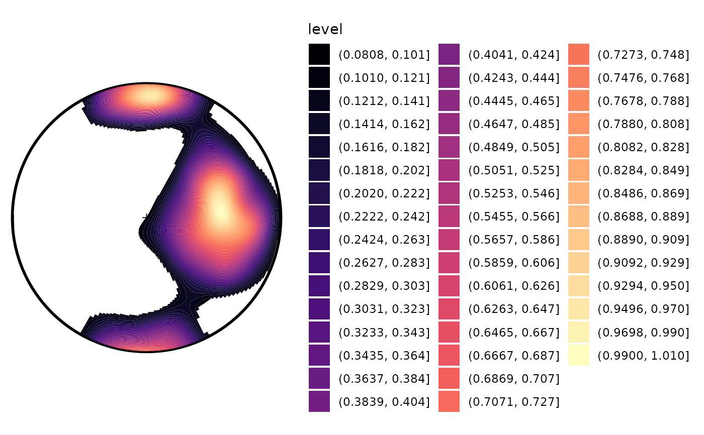

Stereoplot contouring using ggplot
Arguments
- data
Default dataset to use for plot. If not already a data.frame, will be converted to one by
ggplot2::fortify(). If not specified, must be supplied in each layer added to the plot.- ngrid
integer. Resolution of density calculation.
- hw
numeric. Kernel bandwidth in degree.
- optimal_bw
character. Calculates an optimal kernel bandwidth using the cross-validation algorithm (
'cross') or the rule-of-thumb ('rot') suggested by Garcia-Portugues (2013). Ignored whenhwis specified.- norm
logical. Should the densities be normalized?
- threshold
numeric. Cut-off for low densities.
- ...
arguments passed to
ggplot2::geom_contour(),ggplot2::geom_contour_filled(), orggplot2::geom_tile()- smooth
logical. Whether
ggplot2::geom_tile()should be used for plotting.
References
Garcia Portugues, E. (2013). Exact risk improvement of bandwidth selectors for kernel density estimation with directional data. Electronic Journal of Statistics, 7, 1655-1685.
Examples
if (require("mapproj")) {
test_data <- rbind(
rvmf(100, mu = Line(90, 45), k = 10),
rvmf(50, mu = Line(0, 0), k = 20)
)
ggstereo() +
geom_contourf_stereo(gg(test_data)) +
ggplot2::scale_fill_viridis_d(option = "A") +
# guides(fill = guide_colorsteps(barheight = unit(8, "cm"), show.limits = TRUE)) +
geom_contour_stereo(gg(test_data), color = "grey") +
ggplot2::geom_point(data = gg(test_data), ggplot2::aes(x = x, y = y), color = "lightgrey") +
ggframe()
ggstereo() +
geom_contourf_stereo(gg(test_data), norm = TRUE, bins = 50, threshold = .1) +
ggplot2::scale_fill_viridis_d(option = "A")
}
#> Warning: Contour data has duplicated x, y coordinates.
#> ℹ 19800 duplicated rows have been dropped.
#> Warning: Removed 10607 rows containing non-finite outside the scale range
#> (`stat_contour_filled()`).
